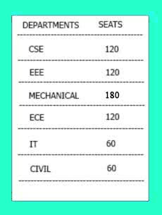

About The Department
"The world is an open source, and computer science is the art of accessing it"
The Computer Science Engineering is a proficient branch, that offers technical and professional competency to students and also aids in inculcating moral and ethical values. The world is evolving technologically and Computer Science is the discipline that lies at the intersection of computing mathematics & applications in science, engineering and social sciences. We develop advances in computing that enable discovery & innovation in other domains.

Department Objectives
The department equips the students to perform analysis, specification, design and implement exceptional computer solutions.
The students are bestowed with practical experience based on the cutting-edge computer technology.
The department aspires to produce accomplished professionals by enhancing their general skills in logical & analytical understanding.
The students are facilitated in their career placements by providing multiple placement training courses.